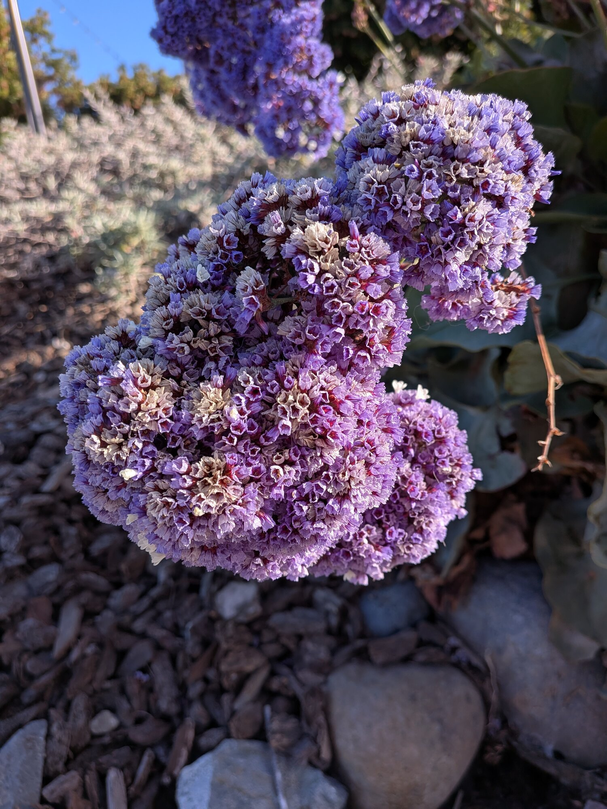
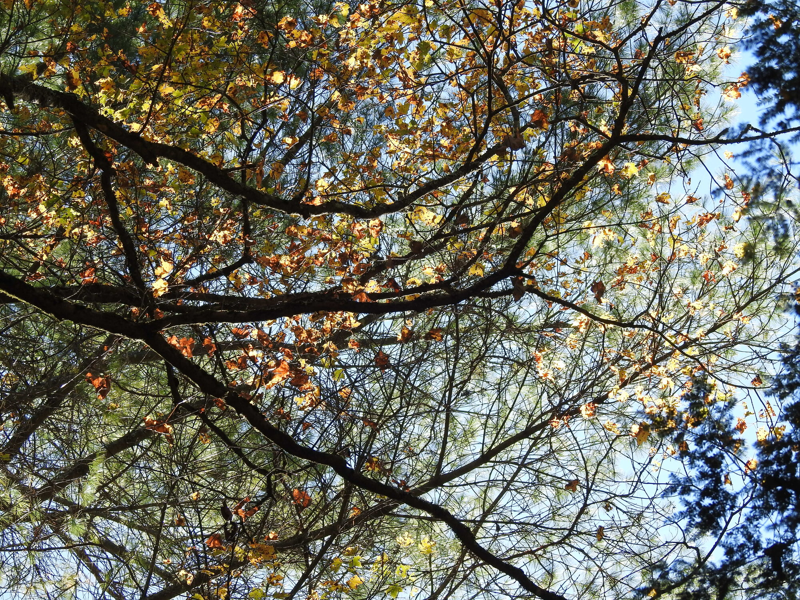

Elliot Callender
Home
Writing
Hobbies
Timeline
Confusion
Interleaved Photos
Atlanta, GA

Florets seen all over the Bay area

Mixed foliage at Switzer Lake, VA
← Landscape Photos
College (Digital) →